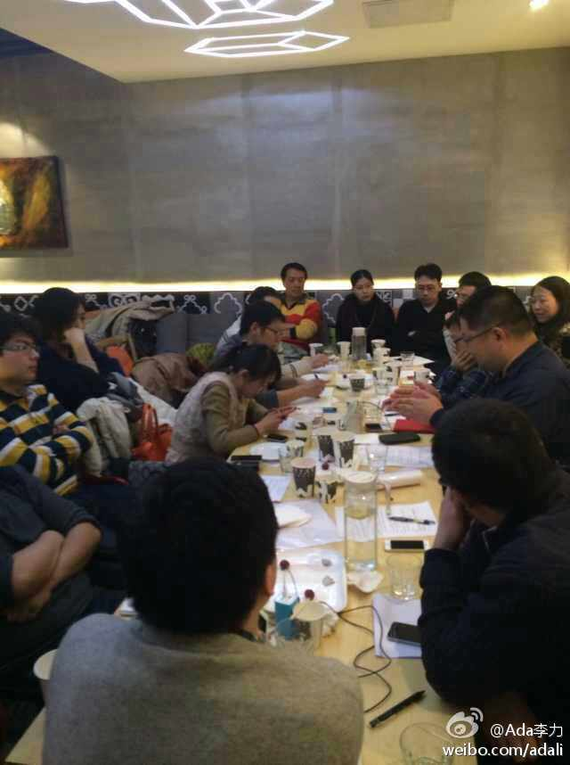
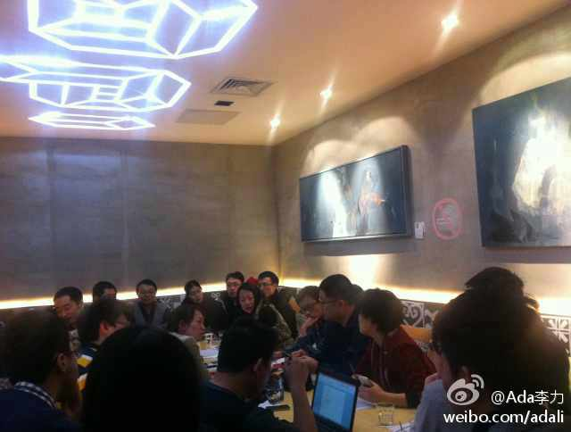
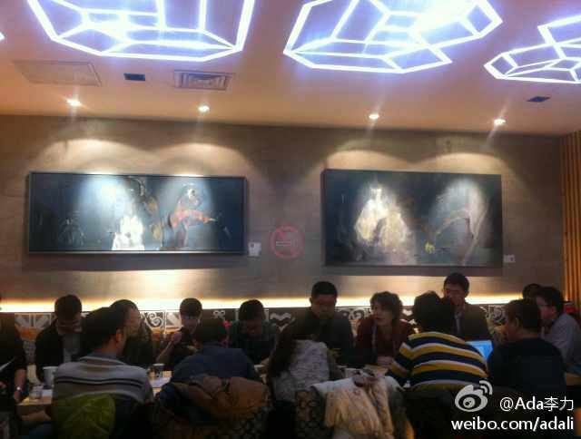

这是要创业的节奏？招的工种够全的。[呵呵]//@黄国荣Galen: @程开源 @汪金保 @淘宝正明 @Ada李力 @韩宪平 @phreaker @韩宪平 求推荐，转发！---:抱歉，此微博已被作者删除。查看帮助： 网页链接
回复@郑几块:先加微信好友吧，我的微信号：ada_li_li。IT社区运营群满了，升级后再加新人。[呵呵] //@郑几块:希望把社区运营的范围扩大啊，求参加@Ada李力:昨晚在3W咖啡的IT社区运营聚会讨论很热烈，聊到咖啡馆打烊时间。期间还有不在现场人士做微博直播。有蛮多收获需要整理。另，谢谢Ella赞助场地和餐饮。 
你们怎么才会发现@程序媛念茜 呢？[呵呵]之前妹子还做过一段时间的CSDN移动版主。@杰夫-斯基:发现一个非常强悍的系列，iOS安全玫防： 网页链接 居然还是一个妹子程序员的作品，墙裂推荐啊！先Fo妹子再慢慢读！妹子传送门在此 @程序媛念茜
开源党如果想在国内托管软件项目，估计只能选CSDN 的CODE平台了, 可以看看 网页链接 //@PynixWang: 开源党不喜欢csdn//@Ada李力:你们怎么才会发现@程序媛念茜 呢？[呵呵]之前妹子还做过一段时间的CSDN移动版主。@杰夫-斯基:发现一个非常强悍的系列，iOS安全玫防： 网页链接 居然还是一个妹子程序员的作品，墙裂推荐啊！先Fo妹子再慢慢读！妹子传送门在此 @程序媛念茜
这是为@CTO俱乐部 会员们安排的活动。[呵呵]//@蒋涛CSDN: AWS期待已久 @Ada李力 @刘江总编@亚马逊云科技:2月18日CSDN将组织“CTO俱乐部走进亚马逊AWS”，通过实地参观交流，零距离接触感受亚马逊AWS的企业环境、技术交流和会员间的沟通分享。将由AWS的技术专家方国伟，庄富任，百衲信息技术的研发总监喻俨共同介绍和分享AWS的最近技术和案例。CSDN网站报名链接网页链接